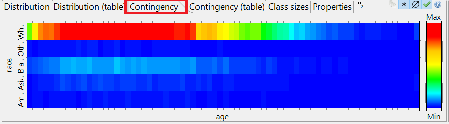
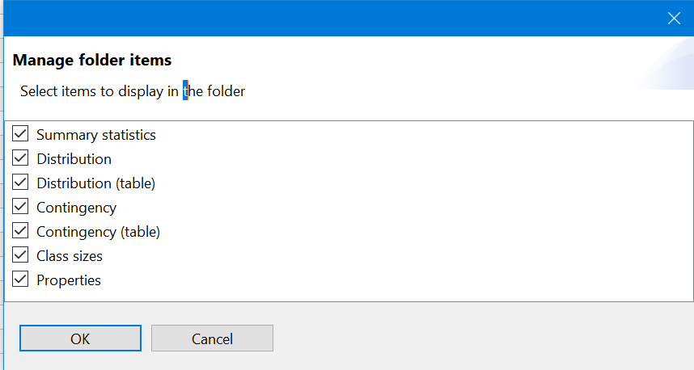

This view shows a heat map or a table visualizing the contingency of two selected attributes.
Contingency refers to the multivariate frequency distribution of two variables (or a variable and itself).
Note: ARX tries to present comparable data visualizations of properties of the original and transformed datasets. For this purpose, it uses information from the attributes' data types and relationships between its values, which are extracted from the generalization hierarchies. As a consequence, specifying reasonable data types and hierarchies will increase the quality and usefulness of data visualizations.
Note: The table view can be activated using "manage items" buttons on the top right.
